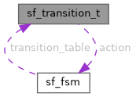

|
StateFox
|
A single row in the FSM transition table. More...
#include <statefox.h>

Public Attributes | |
| sf_state_t | current_state |
| sf_event_id_t | event_id |
| sf_state_t | next_state |
| sf_action_fn | action |
A single row in the FSM transition table.
Describes a transition from current_state to next_state when event_id is dispatched, optionally invoking action.
| sf_transition_t::action |
Called when the transition is taken. May be NULL for no-op transitions.
| sf_transition_t::current_state |
The state this transition applies to.
| sf_transition_t::event_id |
The event that triggers this transition.
| sf_transition_t::next_state |
The state the machine moves to after the transition.